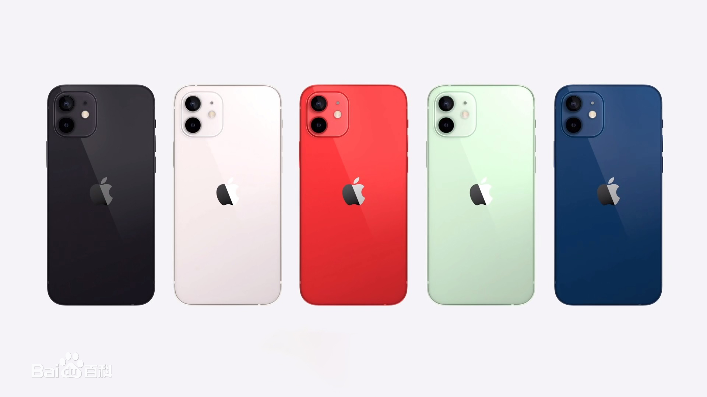

苹果于今年10月份推出了iPhone 12系列，依旧是铁打的刘海屏设计，这是继2017年iPhone X后，苹果连续四年采用刘海设计了。不过据最新信息，iPhone 13似乎在刘海屏设计上有所调整。
 iphone12官方图片近日，网友爆料称苹果目前正努力同时研发几款iPhone 13原型机，而其中有一款有着非常小的刘海。其实在早期就有供应链消息放出，称苹果打算在iPhone 13上搭载ToF传感器，而这将大幅缩小苹果新机的刘海。与今年的iPhone 12系列一样，苹果计划在明年推出四款iPhone 13机型。而且都将搭载D-ToF技术的LiDAR Scanner，而安装这一新传感器后将会带来一个新变化——刘海面积将会得到缩小，原因是结构光3D感测模块体积相对应减少了。
line-through
underline
overline
苹果官网